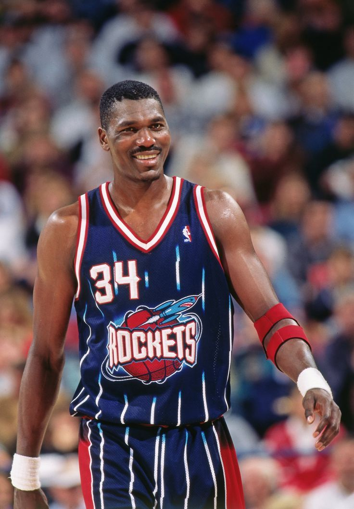
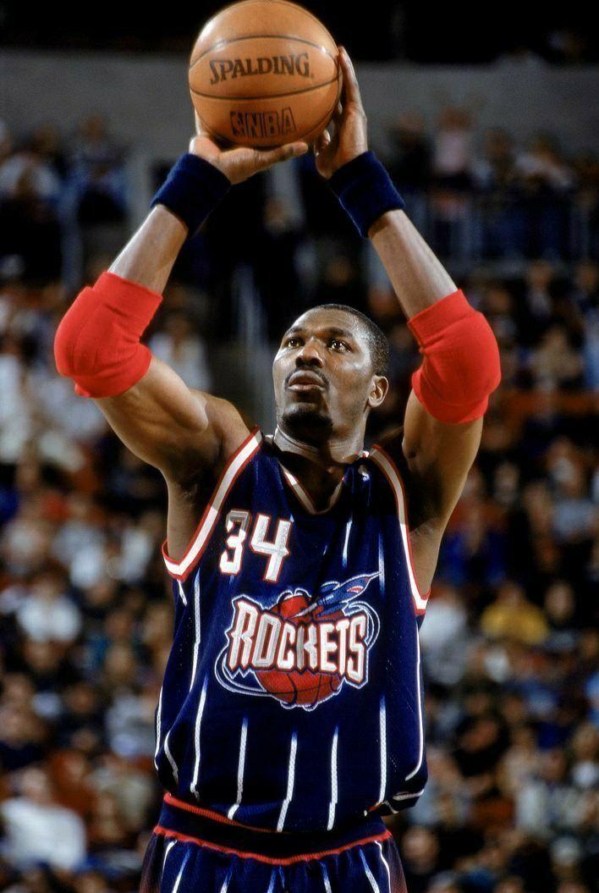

Video Argumentasi
Halaman ini menampilkan karya video argumentasi yang telah saya selesaikan untuk proyek Ujian Praktik Terintegrasi.
Topik & Alasan
Topik yang saya angkat adalah tentang peran kegiatan IC di sekolah dalam membentuk keterampilan siswa SMPIT Al Haraki.
Harapan
Harapan saya adalah pesan dalam video ini dapat tersampaikan dengan baik kepada para penonton.
VIDEO


